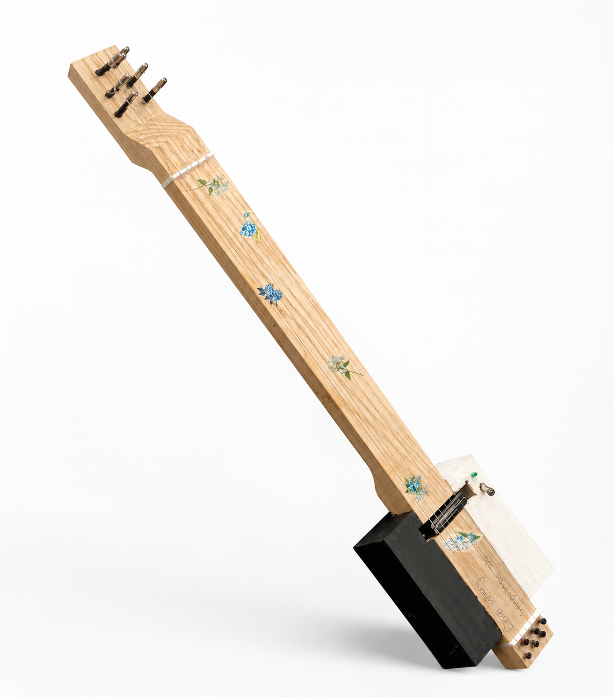
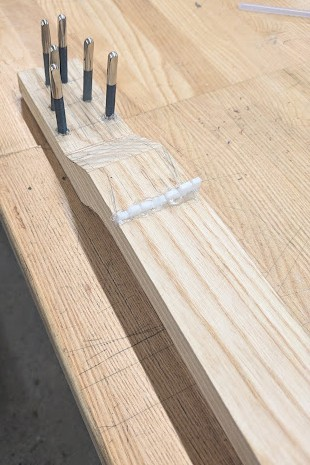
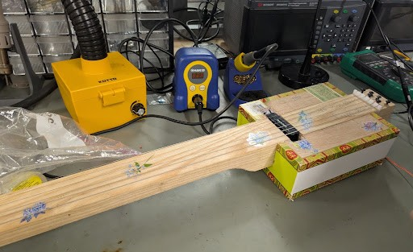
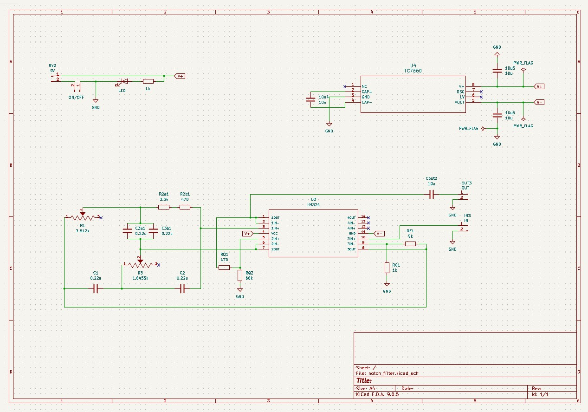
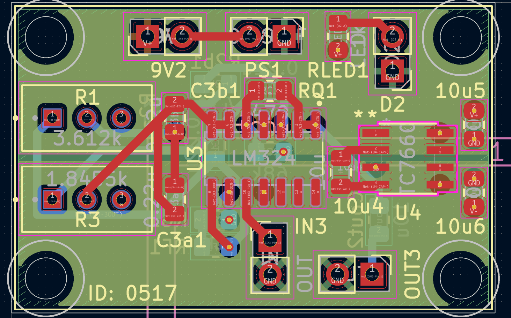
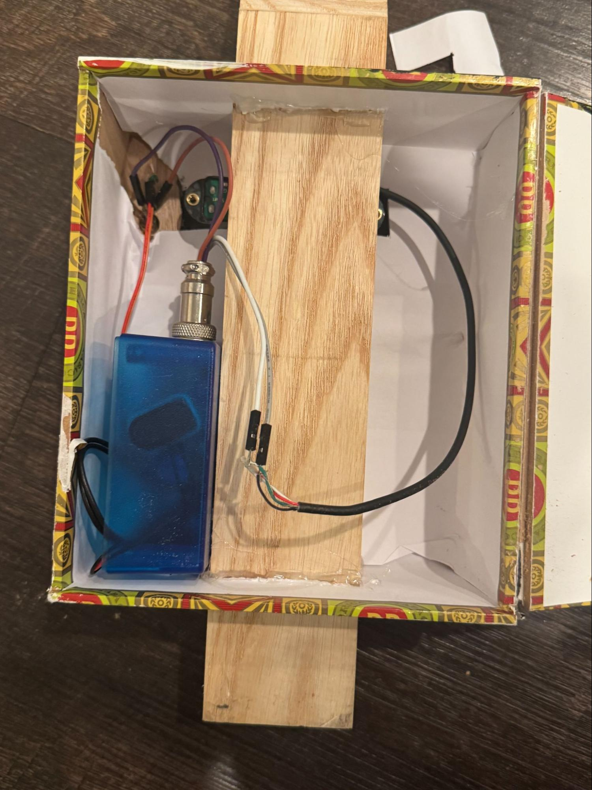
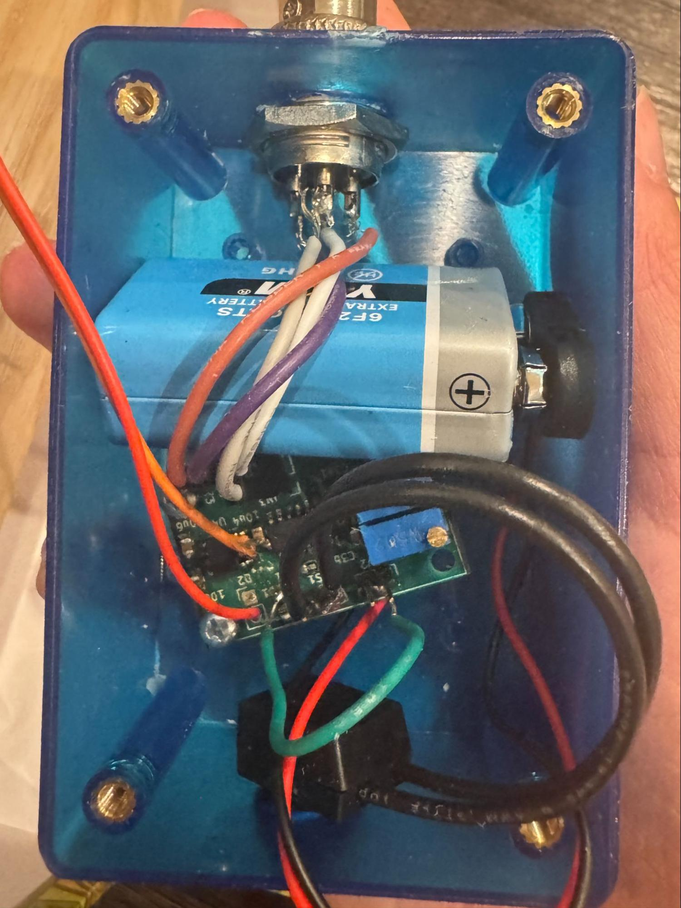

Electric Guitar
Hardware Engineer
A cigar-box electric guitar is a simple guitar built using a wooden cigar box as the body, a wooden neck, magnetic pickups, and basic electronic circuitry. It operates on the same principles as a common electric guitar by converting string vibrations into electrical signals that can be amplified. As part of this project, I also practiced designing a Twin-T notch (band-stop) filter to suppress the fundamental frequency of the G string (196 Hz) while preserving the surrounding notes. I built this project with Stephanie Shi during EE 202.

Wood Design and Fabrication


The objective of this project is to build a cigar-box electric guitar and a notch (bandstop) filter that suppresses the fundamental frequency of the G string (196 Hz) without affecting other notes. The raw wood was manufactured by EE 202 staff.
Filter Design and Test

The main goal of this design is to create a notch filter that blocks the fundamental frequency of an unfretted guitar string. The filter must reduce this frequency by at least 20dB without attenuating adjacent notes, which requires a high Q-factor. The circuit also needs to use a dual power supply (V+ and V-) to power the op-amps. To meet these requirements, we used a Twin-T notch filter design. The following section analyzes this circuit to show how it meets the requirements for gain (K), center frequency (𝜔0), and quality factor (Q).
Printed-Circuit-Board (PCB) Layout

Hand-soldering all PCB components, including the aviation plug, switch, and LED connections. Simultaneously, we fabricated the guitar by cutting the cigar box for the pickup, installing the bridges, and tuning the strings. Before putting everything together, we spent some time on testing and debugging our PCB. Once an accurate output was confirmed, we completed assembly by soldering the final connections between the aviation plug, output jack, pickup, and the PCB.
Guitar and Electrical Component Assembly


I hand-soldered the PCB components, aviation connector, switch, LED, and audio connections before assembling the complete system. After installing the pickup, bridges, and strings, I tested the electronics independently to verify the output signal before completing the final wiring between the pickup, output jack, and PCB.
Final Electrical Testing
We encountered significant issues during the final testing phase that required extensive debugging. Initially, the LED failed to light up, so we used a multimeter to troubleshoot voltages and connections. We discovered that the LED resistor was not connected to the V+ plane, so we soldered a jumper wire from the battery source to the resistor to fix it. Afterwards, we found that the first gain stage output was non-functional and noisy due to an imbalance between the voltage rails. The negative rail measured only -3.4V compared to +8.6V on the positive rail. Replacing the charge pump did not help, so we spent more time debugging the circuit by checking the output at each gain/filter stage. The problem was the feedback resistors and capacitors, so we resoldered all of them to ensure better connectivity. This resolved the power difference issue. Once the output signal was clean, we measured the notch filter frequency. It turned out to be about 191 Hz instead of the target 196 Hz. This slight deviation is likely caused by standard component tolerances in the capacitors or other poor connections.